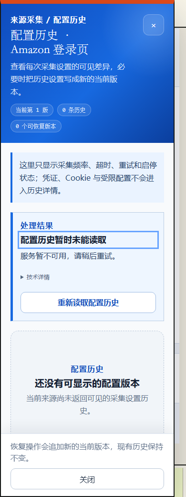
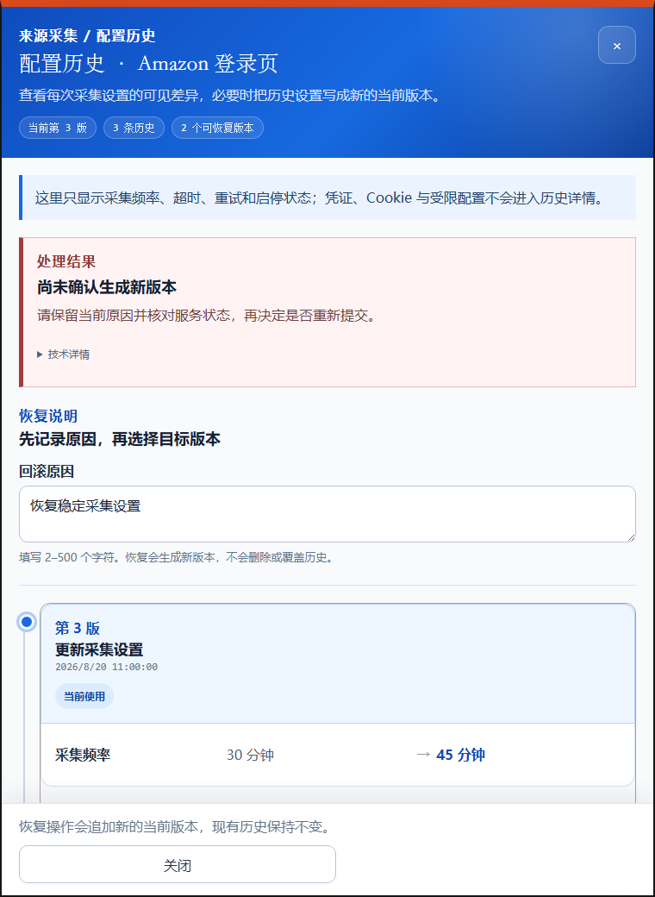

P48 配置回滚交互 · 实际 Vue r1
390px · submitting · submitting
390px · submitting · confirmed
390px · success · success
390px · conflict · conflict
390px · conflict · recovered
390px · forbidden · forbidden
390px · failed · failed
390px · catalog-failed · sync-failed
 390px · catalog-failed · recovered
390px · history-failed · sync-failed
390px · history-failed · recovered
390px · catalog-failed · recovered
390px · history-failed · sync-failed
390px · history-failed · recovered

390px · initial-read-failed · read-failed
390px · initial-read-failed · recovered
760px · submitting · submitting
760px · submitting · confirmed
 760px · success · success
760px · conflict · conflict
760px · conflict · recovered
760px · forbidden · forbidden
760px · success · success
760px · conflict · conflict
760px · conflict · recovered
760px · forbidden · forbidden

760px · failed · failed
760px · catalog-failed · sync-failed
 760px · catalog-failed · recovered
760px · history-failed · sync-failed
760px · history-failed · recovered
760px · initial-read-failed · read-failed
760px · initial-read-failed · recovered
1024px · submitting · submitting
1024px · submitting · confirmed
1024px · success · success
1024px · conflict · conflict
1024px · conflict · recovered
1024px · forbidden · forbidden
1024px · failed · failed
1024px · catalog-failed · sync-failed
760px · catalog-failed · recovered
760px · history-failed · sync-failed
760px · history-failed · recovered
760px · initial-read-failed · read-failed
760px · initial-read-failed · recovered
1024px · submitting · submitting
1024px · submitting · confirmed
1024px · success · success
1024px · conflict · conflict
1024px · conflict · recovered
1024px · forbidden · forbidden
1024px · failed · failed
1024px · catalog-failed · sync-failed
 1024px · catalog-failed · recovered
1024px · history-failed · sync-failed
1024px · history-failed · recovered
1024px · initial-read-failed · read-failed
1024px · initial-read-failed · recovered
1440px · submitting · submitting
1440px · submitting · confirmed
1440px · success · success
1440px · conflict · conflict
1440px · conflict · recovered
1440px · forbidden · forbidden
1440px · failed · failed
1440px · catalog-failed · sync-failed
1440px · catalog-failed · recovered
1440px · history-failed · sync-failed
1024px · catalog-failed · recovered
1024px · history-failed · sync-failed
1024px · history-failed · recovered
1024px · initial-read-failed · read-failed
1024px · initial-read-failed · recovered
1440px · submitting · submitting
1440px · submitting · confirmed
1440px · success · success
1440px · conflict · conflict
1440px · conflict · recovered
1440px · forbidden · forbidden
1440px · failed · failed
1440px · catalog-failed · sync-failed
1440px · catalog-failed · recovered
1440px · history-failed · sync-failed
 1440px · history-failed · recovered
1440px · initial-read-failed · read-failed
1440px · initial-read-failed · recovered
1440px · history-failed · recovered
1440px · initial-read-failed · read-failed
1440px · initial-read-failed · recovered